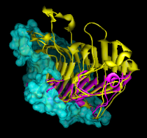

|  |
Per-Model Clipping allows different models to be clipped in different ways. Unlike the global clipping planes, a per-model clipping plane:
Each model can have one per-model clipping plane. A molecule model and its associated molecular surface are treated as separate models. Per-model clipping planes and slabs are saved in sessions.
There are several ways to start Per-Model Clipping, a tool in the Depiction category. Per-model clipping can also be controlled with the command mclip.
The Model pulldown menu shows the current model and allows switching between models.
Activating Enable clipping turns on a clipping plane for the current model. The plane's starting position is perpendicular to the line of sight with its center of rotation at the current center of view; the visible portion of the model is behind the plane.
Activating Use slab mode with thickness [d] (with d > 0) limits the visible portion of the current model to a slab d units thick; d = 5.0 by default. The units depend on the data but are usually angstroms.The clipping plane can be moved with the mouse and/or by using:
Close closes the Per-Model Clipping interface and turns off mouse control of all per-model clipping planes. Any per-model planes that have been enabled, however, will remain enabled until explicitly disabled (by unchecking Enable clipping). Help opens this manual page in a browser window.

Activating Adjust clipping with mouse as below allows the clipping plane to be moved independently with the mouse. The Clip Motion Assignments determine which buttons are used. Translation moves the plane along its normal without changing the angle; the direction of translation caused by a particular cursor motion depends on the angle of the plane. Rotation changes the angle of the plane, with cursor control similar to that of standard rotation. During such manipulations, the plane's position is illustrated with a semitransparent disk. The plane-controlling mouse modes are shown in the Mouse preferences after Per-Model Clipping has been started.
Changing the current model turns off mouse control of the previous model's clipping plane. When mouse control is turned off for all per-model clipping planes, the mouse buttons return to their previous functions (as shown in the Mouse preferences). During standard rotation and translation operations, each per-model clipping plane will move along with its associated model. If a model is not active, neither it nor its clipping plane will move.